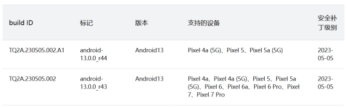
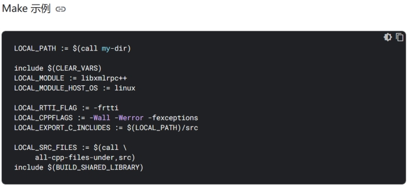
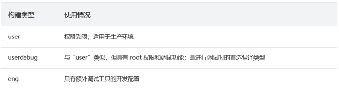
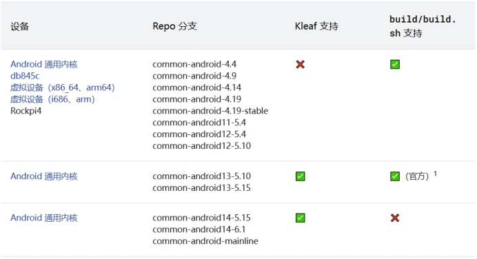
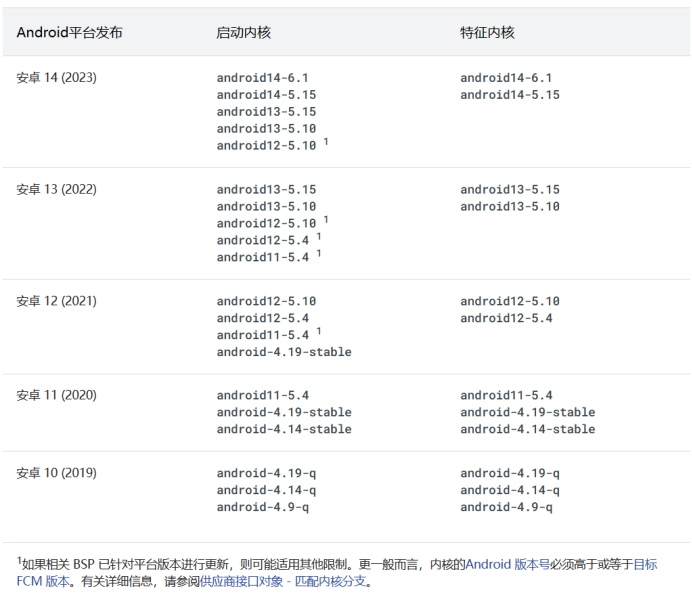

AOSP和LineageOS的代码检出、构建、刷机
AOSP部分
环境要求
硬件
处理器：2.3.x以上Android版本需要64位架构的处理器
内存：官方最低16G，谷歌推荐64G；实测虚拟机32G以下内存有概率崩溃，物理机没问题，虚拟机建议至少40G内存
硬盘：代码250G，编译再加150G，建议500G以上SSD
网络：保证网络稳定，否则检出代码很容易中断
参考：虚拟机+i5 10700 + 32G内存+SSD，检出代码约4小时，编译、链接、打包约3.5个小时
软件
Ubuntu 22.04 LTS x64
JDK AOSP自带
Make AOSP自带
Python 3
sudo apt install git-core gnupg flex bison build-essential zip curl zlib1g-dev libc6-dev-i386 libncurses5 lib32ncurses5-dev x11proto-core-dev libx11-dev lib32z1-dev libgl1-mesa-dev libxml2-utils xsltproc unzip fontconfig
以上都是针对Android9.0及以上版本的环境配置
下载代码
清华源：https://mirrors.tuna.tsinghua.edu.cn/help/AOSP/
科大源：https://mirrors.ustc.edu.cn/help/aosp.html
谷歌官方的方法不适合国内，参考:
https://source.android.google.cn/docs/setup/download/downloading
方法一：
以下是推荐的国内下载代码方法 “ 初始同步方法 第一次同步数据量特别大，如果网络不稳定，中间失败就要从头再来了。所以我们提供了打包的 AOSP 镜像，为一个 tar 包，大约 200G（单文件 200G，注意你的磁盘格式要支持）。这样你 就可以通过 HTTP(S) 的方式下载，该方法支持断点续传。 下载地址: https://mirrors.ustc.edu.cn/aosp-monthly/
请注意对比 checksum。
然后根据下文 替换已有的AOSP源代码的remote 的方法更改同步地址。
解压后用命令 repo sync 就可以把代码都 checkout 出来。
Note: tar 包为定时从 https://mirrors.tuna.tsinghua.edu.cn/aosp-monthly/ 下载。 ”
方法二：
“ 如果想用官方步骤+国内镜像地址的方法，将官方步骤中的 https://android.googlesource.com/ 全部使用 https://mirrors.tuna.tsinghua.edu.cn/git/AOSP/ 代替即可。由于使用 HTTPS 协议更安全，并且更便于我们灵活处理，所以强烈推荐使用 HTTPS 协议同步 AOSP 镜像。由于 AOSP 镜像造成CPU/内存负载过重，我们限制了并发数量，因此建议：sync的时候并发数不宜太高，否则会出现 503 错误，即-j后面的数字不能太大，建议选择4。请尽量选择流量较小时错峰同步。 ”
分支选择

选择完REPO方式和TAG后，执行以下命令进行代码同步
repo init -u https://mirrors.tuna.tsinghua.edu.cn/git/AOSP/platform/manifest -b android-14.0.0_r1
repo sync
构建系统(Soong编译系统)
Make(.mk)和Soong(.bp)比较
以下是 Make 配置与 Soong 在 Soong 配置（Blueprint 或 .bp）文件中完成相同操作的比较。

构建Android
参考：https://source.android.google.cn/docs/setup/build/building
设置环境(通过脚本导入命令). build/envsetup.sh
或source build/envsetup.sh
通过hmm查看导入的命令
选择目标 lunch aosp_arm-eng
或lunch

可以选择的硬件设备参考：
https://source.android.google.cn/docs/setup/build/running?hl=zh-cn#selecting-device-build
编译代码
模拟器启动
emulator &
build指纹
如需跟踪和报告与特定 Android build 相关的问题，请一定要了解 build 指纹。build 指纹是能让人看懂的唯一字符串，其中包含向每个 build 发出的制造商信息。有关详情，请参阅 Android 兼容性定义文档 (CDD) 中 Build 参数部分内的“FINGERPRINT”说明。https://source.android.google.cn/docs/compatibility/14/android-14-cdd#322_build_parameters
build指纹表示特定的 Android 实现和修订版本。此唯一键可让应用开发者和其他人报告与特定固件版本相关的问题。如需了解 Android 问题报告流程，请参阅报告 bug。
build指纹封装了所有 Android 实现详情：
- PI：Android 和原生，以及软 API 行为
- 核心 API 和部分系统界面行为
- CDD 中定义的兼容性和安全性要求
- 应用所采用的产品规范和 uses-feature 设置，用于定位符合预期要求的设备
- 硬件和软件组件的实现
如需查看完整详情，请参阅 CDD。如需有关打造全新 Android 设备的说明，请参阅添加新设备。
编译内核
参考：https://source.android.google.cn/docs/setup/build/building-kernels
repo init -u https://android.googlesource.com/kernel/manifest -b BRANCH
以下是BRANCH可选的分支名称(最右边)
以下是构建方法
Android 13之前build/build.sh
Android 13及以后
tools/bazel build //common:kernel_aarch64_dist
tools/bazel run //common:kernel_aarch64_dist -- --dist_dir=$DIST_DIR
以下是一些Tips：
1. Android 11 引入了 GKI，用于将内核拆分为由 Google 维护的内核映像和由供应商维护的模块，二者分别单独构建;
2. 在 Android 12 中，Cuttlefish 和 Goldfish 融合，因此它们共享同一个内核：virtual_device;
3. Android 13 引入了使用 Bazel (Kleaf) 构建内核的功能，以取代 build.sh
如需详细了解如何使用 Bazel 构建 Android 内核，请参阅：Kleaf - 使用 Bazel 构建 Android 内核。https://android.googlesource.com/kernel/build/+/refs/heads/master/kleaf/README.md
对设备和内核的 Kleaf 支持

有关Android通用内核喝GKI解释，参考： https://source.android.google.cn/docs/core/architecture/kernel/android-common
功能和启动内核
由于更新平台版本时通常不需要升级内核，因此缺少平台版本最新功能的内核仍可用于启动设备。因此，即使将平台版本升级到 Android 11 后，专为 Android 10 设计的内核（例如android-4.19-q ）也可以在设备上使用。从 Android 12 开始，功能内核将少于启动内核，以限制功能内核的数量必须支持的稳定 KMI。

有关Android操作系统核心主题，包括架构、内核、HAL层等开发文档，可以参考：
https://source.android.google.cn/docs/core
有关Android automotive的主题，可以参考：
https://source.android.google.cn/docs/automotive
Android 14 Automotive 远程唤醒工作流示例
https://source.android.google.cn/docs/automotive/remote_access
Build LineageOS for Xiaomi Mi MIX 2S
LineageOS介绍
LineageOS（也称Lineage OS、Lineage OS Android Distribution）是一个面向智能手机和平板电脑的自由、免费、开放源代码的Android系统分支。它是深受欢迎的定制ROM CyanogenMod的继任者。它在2016年12月Cyanogen公司突然宣布停止开发并关闭项目基础设施后复刻而生。LineageOS于2016年12月24日正式启动，其源代码存放于GitHub。
由于Cyanogen公司保留了使用Cyanogen名称的权利，因此项目复刻后更名为LineageOS。
目前LineageOS最新版本是21，基于AOSP 14. 参考https://www.lineageos.org/Changelog-28/
LineageOS的思路是，内核使用手机厂商或者SoC供应商提供的开源内核版本，或支持的二进制版本，系统源码使用AOSP，应用层自行开发的模式。所以源代码分为三个部分：
- 1. AOSP源码，谷歌OpenSource托管
- 2. LineageOS APP 源码，Github托管
- 3. Kernel源码或二进制模组，Github托管，或使用脚本从手机端直接拉取
基于这个模式，LineageOS支持的设备是有限的，谷歌手机因为内核开源，所以全系列支持，其它手机厂根据不同机型支持的情况也不同，参见：https://wiki.lineageos.org/devices/
本文以小米 Mix 2s(代号Polaris)为例讲解
参考：https://wiki.lineageos.org/devices/polaris/build/
环境要求
1. Mix 2s手机一台(可解锁)
2. 编译软硬件环境和AOSP要求差不多，按照之前AOSP的要求准备即可
3. 因为涉及到编译版本的刷机操作，所以需要准备platform-tools环境，可以安装Android Studio并配置SDK，也可以只下载platform-tools，地址: https://dl.google.com/android/repository/platform-tools-latest-linux.zip，
下载后配置环境变量：unzip platform-tools-latest-linux.zip -d ~
在~/.profile文件中添加以下代码：
# add Android SDK platform tools to path
if [ -d "$HOME/platform-tools" ] ; then
PATH="$HOME/platform-tools:$PATH"
fi
运行 source ~/.profile 导入环境变量配置
4. 安装编译需要的库
sudo apt install bc bison build-essential ccache curl flex g++-multilib gcc-multilib git git-lfs gnupg gperf imagemagick lib32readline-dev lib32z1-dev libelf-dev liblz4-tool libsdl1.2-dev libssl-dev libxml2 libxml2-utils lzop pngcrush rsync schedtool squashfs-tools xsltproc zip zlib1g-dev
如果是低于Ubuntu 23.10，还需要安装lib32ncurses5-dev libncurses5 libncurses5-dev
5. Java要求，如果是LineageOS 18.1+版本，源码自带JDK，无需自行安装
6. 如果是LineageOS 17.1+，还需要安装Python 3:sudo apt install python-is-python3
检出代码
7. 创建安装目录
mkdir -p ~/bin
mkdir -p ~/android/lineage
8. 下载repo
curl https://storage.googleapis.com/git-repo-downloads/repo > ~/bin/repo
chmod a+x ~/bin/repo
在~/.profile中添加以下代码
# set PATH so it includes user's private bin if it exists
if [ -d "$HOME/bin" ] ; then
PATH="$HOME/bin:$PATH"
fi
运行 source ~/.profile 导入环境变量配置
9. 配置git
git config --global user.email "you@example.com"
git config --global user.name "Your Name"
git lfs install
10. 配置编译缓存(可选)
export USE_CCACHE=1
export CCACHE_EXEC=/usr/bin/ccache
ccache -o compression=true
11. 初始化LineageOS 源代码仓库(以LineageOS 21为例)
cd ~/android/lineage
repo init -u https://github.com/LineageOS/android.git -b lineage-21.0 --git-lfs
repo sync
注意：由于LineageOS的源代码包含AOSP，所以在repo init之后，sync之前做一点修改.
进入到源码根目录/.repo/manifests，打开default.xml，找到remote name="aosp"节点，修改fetch="https://mirrors.tuna.tsinghua.edu.cn/git/AOSP"，保存退出后再运行repo sync.
经过漫长的等待，就会下载完源代码。一定要保证github访问稳定，否则会导致代码不完整甚至下载中断，可通过多次运行repo sync来保证代码完整性
12. 准备设备特殊代码
在源代码根目录运行以下命令
source build/envsetup.sh
breakfast polaris
这会下载mix 2s的特殊设备配置文件和内核
如果你的设备已经刷过LineageOS，可以使用设备获取这些文件。
进入~/android/lineage/device/xiaomi/polaris 目录，接上手机并开启adb调试模式，运行./extract-files.sh
脚本会从手机上直接获取所需的配置文件和内核。
编译代码
13. 编译
运行
croot
brunch polaris
等待编译结束，时间与AOSP的编译时间相当
刷机步骤
14. 刷机
进入到out目录，找到两个文件
recovery.img // 这是LineageOS的recovery.
lineage-21.0-20240305-UNOFFICIAL-polaris.zip // 这是lineage的安装包
按照以下步骤开始刷机操作:
a) 解锁手机
b) 手机开启adb调试模式，adb -d reboot bootloader 进入到bootloader。也可以通过同时按住音量键下+电源键进入。进入到bootloader后使用fastboot devices查看设备是否识别
c) 刷入编译好的recovery：fastboot flash recovery recovery.img . 刷入后，不要直接重启进入到系统，而是按住音量上+电源键进入到recovery，如果不是LineageOS的图标，则需要重复b步骤后再次刷入recovery，这是因为Android目前使用A/B分区的方式保证升级的安全性，所以存在两个recovery分区，可能需要刷两次同时覆盖两个分区。
d) 进入到LineageOS后，三清，然后进入apply update from adb, 进入到sideload线刷模式
e) 在电脑端输入adb -d sideload lineage-21.0-20240305-UNOFFICIAL-polaris.zip ，等待100%后刷入成功，重启进入系统。系统刷完
f) 如果要刷入GMS，则在e步骤刷完zip后继续刷入其它GMS包，然后再重启即可。
本文结束.